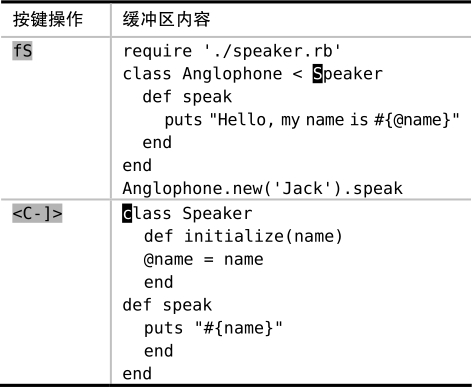
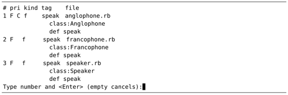

。
。技巧103使用Vim的标签跳转命令，浏览关键字的定义
Vim 与ctags的集成，使得代码中的关键字变成了某种形式的超链接。这使得我们可以快速地跳转到关键字的定义处。接下来，我们将会看到如何使用普通模式下的<C-]>与g<C-]>命令及其相应的Ex命令。
跳转到关键字的定义处
一旦我们按下<C-]>，光标将会从当前所在的关键字跳转到它的定义处。下表展示了实际的操作过程：
在本例中，Anglophone类的定义恰巧在同一个缓冲区。但如果我们将光标移到Speaker关键字上，并调用相同的命令，结果将会切换到这个类定义所在的缓冲区。

当我们按照以上方式浏览整个代码库时，Vim会为我们访问过的标签维护一个历史列表。在浏览标签历史记录时，<C-t>命令会充当“后退按钮”的角色。如果我们此刻按下该键，光标会从Speaker的定义处回到Anglophone的定义处，而如果再按一次的话，光标会回到原位。有关与标签跳转列表交互的更多信息，请查阅:h tag-stack。
当关键字存在多处匹配时，可指定跳转的位置
前面的例子之所以一目了然，是因为示例代码库只包含Speaker与Anglophone关键字的一处定义。但假设我们的光标此时位于speak方法的调用处，例如：
而由于Speaker、Francophone以及Anglophone这3个类都定义了名为speak的函数，因此，如果我们此时调用<C-]>命令，Vim 会跳到哪个定义上呢？自己试试看。
如果当前缓冲区有标签匹配此关键字，则它的优先级最高。针对本例，光标会跳转到Anglophone类的speak函数定义。如果你要了解更多有关Vim划分匹配标签优先级的情况，请查阅:h tag-priority
。
我们还可以用g<C-]>命令来代替<C-]>。如果当前关键字只有一处匹配，这两条命令的行为将完全一致，但如果发生了多处匹配的情况，g<C-]>命令会从标签匹配列表中挑出可选项供我们选择：

正如提示信息所示，我们只需输入相应的数字并按下<CR>键，就可以跳转到指定的位置了。
假设我们已经调用了<C-]>，但发现光标所到之处并非如我们所愿。补救措施之一，是通过 :tselect命令，调出标签匹配列表，从而进行回溯。其次，我们还可以用:tnext命令直接跳转到下一处匹配的标签，这个过程不会显示提示信息。另外，正如你所预料的那样，我们也可以用:tprev、:tfirst、:tlast。你可以参考创建快速遍历Vim列表的按键映射项中的建议，为这些命令分别建立映射项。
使用Ex命令
其实，我们不必非得将光标移到关键字上，才能进行标签跳转，也可以用 Ex命令达到同样的目的。例如，:tag {keyword}与 :tjump {keyword}就分别等同于<C-]>与g<C-]>的功能（参见:h :tag与:h :tjump）。
有的时候，手动输入这些命令，甚至会比把光标移动到某个关键字还要快，特别是当Vim为标签文件的所有关键字提供tab补全功能的时候。例如，我们只需输入:tag Fran<Tab>，Vim就会把这段内容扩展成完整的Francophone。
另外，这些Ex命令也可以使用正则表达式，调用时需采用:tag/{pattern}或:tjump /{pattern}这种形式（注意位于{pattern}前面的/ ）。例如，为了浏览所有以phone为结尾的关键字定义，可以调用以下命令：
➾:tjump /phone$
《 # pri kind tag
1 F C c Anglophone anglophone.rb
class Anglophone < Speaker
2 F c Francophone francophone.rb
class Francophone < Speaker
Type number and <Enter> (empty cancels):
下表总结了在使用标签进行代码浏览时的可用命令：
(1) https://github.com/mozilla/doctorjs
(2) http://ctags.sourceforge.net/FORMAT
(3) http://tbaggery.com/2011/08/08/effortless-ctags-with-git.html